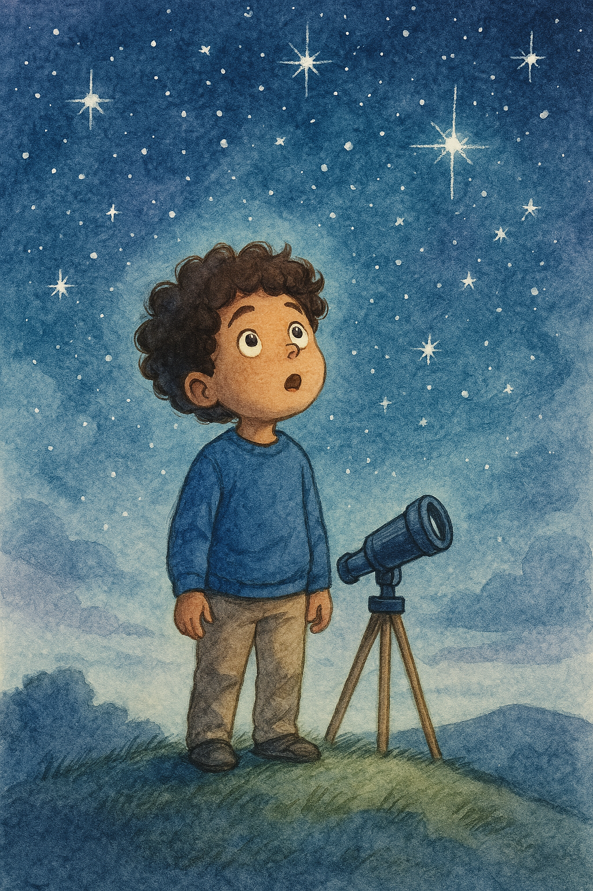

El Universo de Simón
Menú
Inicio
Capítulos
Audiocuento
Lengua de Señas
Accesibilidad
Sobre el proyecto
Inicio
Capítulos
Audiocuento
Lengua de Señas
Accesibilidad
Sobre el proyecto
El Universo de Simón
🌓 Contraste

Una noche clara y silenciosa, Simón salió al jardín...
🔊 Leer
Lengua de Señas Colombiana
⬅ Anterior
Siguiente ➡